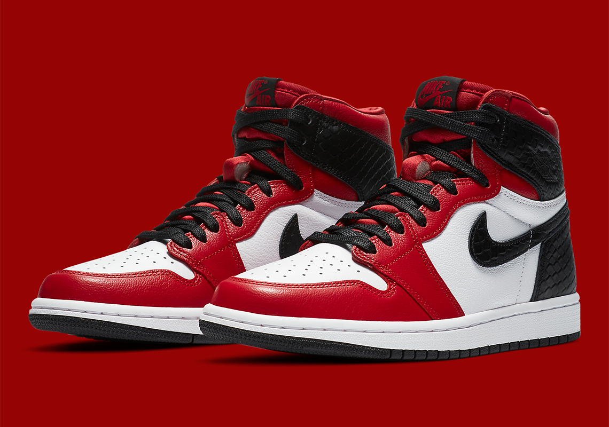

<body>

<div class="container mt-5">
  <div class="card">
    <div class="head"style="margin: 20px;">
      <h2>RATE MY KICKS</h2>
    </div>
    <div class="row mt-4" style="margin: 20px;">
      <div class="col-md-6">
        
      </div>
      <div class="col-md-6" card>
        <h3>Nike AIR JORDAN 1 RETRO Basketball shoes FOR MEN</h3>
        <p>The Air Jordan 1 High debuted in 1985 as the first signature sneaker developed by Nike for Michael Jordan. The Peter Moore designed performance basketball sneaker featured a simple Nike Dunk inspired design that incorporated the Nike Swoosh and the Jordan Wings logo and featured Nike Air.


          <br><br>
          Men Size:
            ︱  8US ︱8.5US︱9.5US︱10US︱11US︱
            ︱   41   ︱  42    ︱   43   ︱   44  ︱  45   ︱
          <br><br>
          Shoes Details: 💯 Original Equipment Manufactured (OEM)</p>
        <ngb-rating [max]="10" [(rate)]="currentrate" class ="rate" style = "font-size: 60px"></ngb-rating>
        <hr>
        <pre>Rate: <b>{{currentrate}}</b> of 10</pre>
      </div>
    </div>
  </div>
</div>

</body>

